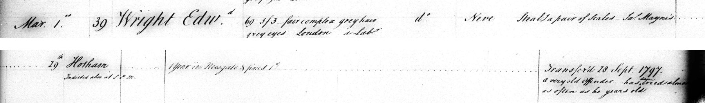
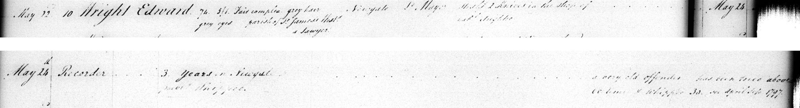

First written down on 16 July 1790, at Robert Metham’s shop in Cheapside, London
Edward Wright
about 1728 to after 14 September 1808
A sawyer who had broken his arm, and dealt in Rag Fair. From the age of about sixty-two to about eighty-two he was tried at the Old Bailey again and again, most often for laying his bag over something on a shop counter and picking the two up together. In 1797 a clerk wrote that he had been tried almost as often as he was years old.
On 16 July 1790 a man came into Robert Metham’s shop in Cheapside, in the City of London, between two and three in the afternoon, and asked for some plated buckles. Metham was a goldsmith and had none. The man went away, and a little girl came in and said he had stolen something. Metham went after him towards Newgate Street, caught him, and found his brass weights in the lining of his coat: a two-pound weight, a pound, a half-pound, an ounce, a half-ounce and a quarter-ounce, valued at two shillings in all. At his trial at the Old Bailey that September the man, Edward Wright, said: “I have been distressed a great while: I did not know that I took the weights; I laid down a bag and took it up, and did not know I took the weights.” He was found guilty and privately whipped.1
That is the first trial I am sure is his, because of what came after. For eighteen years the same man is tried at the Old Bailey, the same way, and says nearly the same thing.
In October 1791 he was tried for two odd iron buckles, plated with silver, worth three shillings, from John Davis’s window in Leadenhall Street. A passer-by, Thomas Bacon, saw him take them and put them under a bag. He said in his defence: “I am a sawyer, I broke my arm some time ago, I deal in Rag-fair; my master gave me a pair of shoes, so having a shilling or two I went to buy a pair; we could not agree, I laid my bag down, the buckles were under the bag; I do not know how they came there.” He was whipped.2 The criminal register for that session describes him: aged 62, five feet high, grey hair, hazel eyes, born in London, a labourer. It adds that he was publicly whipped and discharged on 31 October.3
He is in the same session’s register as a Charlotte Walker, born in Lancashire, who was discharged; she is in this library. Whether she is the Charlotte Walker condemned in 1800, her own life sets out; whether they ever saw each other, nothing says.4
In September 1792 he was tried for sixteen pounds of bacon belonging to William Lewis, and was taken with it upon him. All the Proceedings print of what he said is this: “I bought the bacon; to be sure I have been here before; but I have left it entirely off.” He was fined a shilling and imprisoned for six months.5 The register that session, as transcribed, gives him as 64, five feet ten, born at Westminster, committed to the Poultry Compter by Alderman Boydell.6
In April 1793 he was in Thomas Clarke’s linen draper’s shop at the corner of Holborn and Drury Lane. The shopman, Boyd, asked him what he wanted; he said he was waiting for someone to come and look at some goods. Boyd saw a piece of muslin under a bag under his arm, leapt over the counter and took it from him. Wright said: “I had been drinking with a friend of mine for an hour or two; I took my bag, and laid it as it might be here, and in taking up my bag, I took it up with it; I did not know that I had it under it; I am innocent of it entirely; I allow I was a little in liquor; if I had intended to have stole it, I would not have stood in the shop.” The court gave his age as 64. He was found guilty of stealing, but not privately, and sentenced to two years in the House of Correction and fined a shilling.7 An Edward Wright is on the account of convicts kept at the House of Correction in Clerkenwell from 17 April 1793, and on 11 July the Middlesex justices ordered him moved, with seventeen others, to the new House of Correction in Cold Bath Fields on Thursday the 18th. I think this is him; the lists give no age or description.8
In January 1796, if the transcription’s dates hold, he was seen over the road from William Watson’s pawnshop in Watling Street, rolling a silk cloak trimmed with lace into a coarse wrapper. He said a man running by in a hurry had asked him to hold it while a horse made a slip. The court gave his age as 66. He was publicly whipped and discharged.9
In February 1797 he was caught with a pair of copper scales in his pocket in William Parker’s shop in High Holborn, where he had come in to buy a pocket-book; the scales had gone from James Mayne’s tobacco shop the same Tuesday evening. His defence was one sentence: “I was very much distressed, it was distress that drove me to it.” He was 69, by the court, and was sentenced to a year in Newgate and fined a shilling.10

The register for that session gives him as 69, five feet three, with a fair complexion, grey hair and grey eyes, born in London, a labourer. In the column for remarks the clerk wrote: “a very old offender has been tried almost as often as he years old.”11
In May 1798 he went into Gabriel Aughtie’s hardware shop at the corner of Friday Street, with a bag on his shoulder, and asked if he sold plated buckles. Aughtie watched him throw the bag over a parcel of dessert knives, take his hand away, and say he might sell buckles another time. Aughtie followed him to his other shop near Milk Street, saw him lay his hand over a drawer of penknives in the same way, and took two knives out of his hand at the door. Wright said: “I am a poor distressed fellow, I have no friends, I am obliged to pay a shilling a night for my lodging, and where am I to get it.” The court gave his age as 74. He was sentenced to three years in Newgate and to be publicly whipped.12 The register calls him 74, five feet one, fair, grey-haired and grey-eyed, of the parish of St James’s, Westminster, a sawyer. Its remark reads, as far as I can make it out, “a very old offender has been tried above 60 times & whipped 30 in April Sess. 1797.” I do not know whether the clerk meant that he had been whipped thirty times.13

If he served his three years in Newgate, he was there while Charlotte Walker, condemned at the Old Bailey in January 1800, waited to be transported. Where she was held, her records do not say, and nothing I read puts the two of them together.4
He was free by 26 June 1801, a Friday, 1,128 days after the register’s date for his trial in 1798. That evening he came into William March’s shop and asked to see a Bible, then said there was no need to show him one if he was told the price. An hour after he left, an inkstand was missed, with two glass bottles and fifty printed washing lists in its drawer. He was next in Benjamin Stennett’s china shop in Paternoster Row, asking the price of a jug, with a bag under his arm. Stennett saw his hand go towards the counter; Wright took a candlestick from under his arm, asked what it cost, and put it down; Stennett insisted on seeing what else he had, and found the inkstand. Wright said: “I had no money to assist me, and I did not know what to do.” He was 76, by the court. Twelve months in Newgate, and publicly whipped.14
On 17 September 1802 he asked Thomas Reeves, a hosier on Ludgate Hill, what he could have a pair of black stockings for. Two shillings, Reeves said, and turned round; Wright said he would call again and went out. Reeves caught him at the door with a parcel of four pairs of stockings under his arm and his bag thrown over it. The stockings were valued at fifteen shillings, and the charge was stealing privately in a shop. Wright’s defence was 39 words: “Being in liquor, I laid the bag down on the counter, and by mistake took up the parcel; I have had several blows on my head, which, if I drink a little, makes me insensible of what I do.” Reeves said he did not appear to be in liquor. The Proceedings print: “GUILTY, Death, aged 77. The prisoner was recommended to mercy by the Jury and prosecutor, on account of his age.”15 A study of capital convictions records the recommendation in two words each, jury and prosecutor: “Old Age”. It gives his age as 70, and his punishment, dated 8 December 1802, as two years in Newgate, from the Home Office entry book.16
In November 1806 an old man with a bag and a slate in his hands put the bag down on some things on William Gillman’s counter in Barbican, looked round several times, took the bag up and walked to the door, where William Chubb, a harness maker and a soldier in the West London militia, stopped him. There were twelve handkerchiefs in it. He said: “At the Mansion house they gave me an order for my parish to cloath me, instead of that, they gave me one pair of shoes and one pair of stockings. I went into this shop to ask the price of these stockings; and taking up my bag, I took up these handkerchiefs.” He was 80, by the court, and was sentenced to a year in Newgate and fined a shilling. The Proceedings, on the printed page, call him George Wright.17 I think he was Edward: the bag, the age, and the defence, which is the one he gave in 1790 and 1793. But the name is not his, and I have kept this trial out of the count below.
The last record I found is from September 1808. “EDWARD WRIGHT, alias MY-HEARTY” was tried for a pair of scales worth seven shillings from Thomas Raybott’s house at 15 Gray’s Inn Lane. Thomas Farrer saw him take them from the table in the shop, put them under his arm and cover a sack over them. Farrer did not think himself authorised to take him; the old man walked up Holborn, and “he was detected in another robbery.” His defence: “I leave it all to your mercy.” Guilty, aged 82. A year in the House of Correction, and a shilling’s fine.18
From the weights in Cheapside to the scales in Gray’s Inn Lane is eighteen years. In that time I count ten trials at the Old Bailey that are certainly his, and the one as George. The clerk in 1798 counted above sixty. Where the rest were heard I do not know; the City and Middlesex courts below the Old Bailey are the likeliest places, and I did not search them past 1800. What became of him after 1808, and when he died, I have not found.
In dates
- About 1728. Born, in London or Westminster. The ages the courts and registers give him put his birth between about 1724 and 1732.
- 16 July 1790. Takes Robert Metham’s weights in Cheapside. Tried in September; privately whipped.
- 17 October 1791. Two buckles in Leadenhall Street. Publicly whipped; discharged on 31 October.
- 28 August 1792. Bacon. Six months.
- 2 April 1793. Muslin, at the corner of Drury Lane. Two years in the House of Correction.
- 18 July 1793. Probably moved from Clerkenwell to the new House of Correction in Cold Bath Fields.
- July 1795. Probably held in the Giltspur Street compter for a japanned tea tray, and let go.
- 4 January 1796. A silk cloak in Watling Street. Publicly whipped and discharged.
- 21 February 1797. Copper scales in High Holborn. A year in Newgate.
- 17 May 1798. Two penknives near Milk Street. Three years in Newgate, and whipped.
- 26 June 1801. An inkstand. Twelve months in Newgate, and whipped.
- 17 September 1802. Four pairs of stockings on Ludgate Hill. Sentenced to death, recommended to mercy for his age.
- 8 December 1802. The sentence is changed to two years in Newgate.
- 18 November 1806. Probably him, as George Wright: handkerchiefs in Barbican. A year in Newgate.
- 21 July 1808. Scales in Gray’s Inn Lane, as “Edward Wright, alias My-hearty”. Tried on 14 September, aged 82; a year in the House of Correction.
Before 1790
There are five earlier trials of an Edward Wright at the Old Bailey. None gives an age or a description, and in none does he lay down a bag. I cannot say whether any of them is him.
- September 1774. A linen handkerchief taken from Josiah Collier’s pocket on Holborn Hill. Guilty; the Proceedings print “T.”, which I take to mean transportation (t17740907-70). If he was transported, he is unlikely to be the same man.
- December 1780. A coat taken from outside Nicholas Simmonds’s pawnbroker’s door. He said he saw it lying on the stones. Whipped (t17801206-28).
- December 1784. A cane. Whipped (t17841208-170).
- May 1785. Receiving a pair of sheets from George Hooker in Fleet Street (t17850511-54). The witness had seen “two young men”, and could not say Wright was one of them. By the ages he was given later, Edward Wright the sawyer was then in his fifties or about sixty.
- May 1787. Twenty-one pounds of boiled beef from John Munns’s shop on the west side of Fleet Market, on Monday 7 May. “I had been out of work some time, and almost starved, and had had a little beer, which made me more hungry than I was before.” Whipped (t17870523-71). The voice is like his, and it is a London shop; but that is all.
In 1792 he told the court he had been there before; the clerk of 1797 and 1798 thought he had been tried scores of times. So some of these may well be his.
Records that are not him
- Edward Wright, juror, of the second Middlesex jury in January 1793 and January 1797 (f17930109-1, f17970111-1). Jurors were householders; that is general. Not a man in Newgate.
- Edward Wright Whitcomb, foreman of City coroners’ juries 1788 to 1799 (for example London Lives LMCLIC65002IC650020015), whose will was proved in January 1803 (PROB 11/1386/50). Another man.
- Edward Wright, victualler of St Martin in the Fields, late a labourer of St George Hanover Square, released from actions by a pawnbroker and a yeoman in June 1795 (London Lives LMSMPS50911PS509110074). A man keeping a public house; nothing ties him to the sawyer.
- Edward Wright, partner of Joseph Harding, printers of St John Square, whose journeyman was tried in 1809 (t18090920-38). Another man.
- Edward Wright of 9 Hemmings Row, Charing Cross, named beside a patient admitted to a London hospital in December 1796 (London Lives LMTHRH55412RH554120186). I could not tell from the transcription what part he had in the entry. Doubtful.
- Probably his, not certain: the July 1795 entry in the criminal register for the City, Edward Wright committed to the Giltspur Street compter by Plomer for “Stealing a Japan’d Tea Tray in the Shop of Wm Wrathall”, discharged by proclamation, which I take to mean released without trial (London Lives NAHOCR70001CR700010125; I read the page, which gives no description). A shop, the City, his name; no age.
Where the records disagree
- His height. Five feet in 1791; five feet ten in 1792 and five feet eleven in 1793, in the transcriptions; five feet three in 1797 and five feet one in 1798, on the pages. The two tall entries I could not check against the page.
- His eyes. Hazel in 1791, blue in 1793, grey in 1797 and 1798.
- His age. The ages given put his birth anywhere from about 1724 (aged 74 in 1798) to about 1732 (aged 70 in the capital convictions record of 1802, against 77 in the Proceedings the same month).
- His birthplace. London (1791, 1793, 1797), Westminster (1792), the parish of St James’s, Westminster (1798).
- The 1798 sentence. Three years in Newgate and publicly whipped, in the trial report; three years in Newgate and privately whipped, in the register; three years in the House of Correction and publicly whipped, in the session’s summary (s17980523-1).
- His name in 1806. George, in the Proceedings and the Newgate calendar.
Not yet known
- When and where he died. He was 82, by the court, in September 1808. Burials in London from 1808 were not searched in a register; FreeREG returned nothing for him, but London is thinly transcribed there.
- The sixty trials. The City of London and Middlesex sessions, the Guildhall justice room and the Mansion House would have heard most of them. London Lives covers the Middlesex sessions to 1800; I searched it by name only, and the City’s sessions papers were not searched by me at all.
- The Newgate calendars (HO 77) for 1796 to 1808, indexed on Find My Past, and the criminal registers after 1800 on Ancestry. They would give his descriptions and committals for 1801, 1802, 1806 and 1808.
- HO 13/15, pp. 113–14, at the National Archives: the order that turned his death sentence into two years in Newgate. And whether a judge’s report on him survives in HO 47.
- What Rag Fair dealing was to him, who his “master” of 1791 was, and how he broke his arm.
- Whether the parish order from the Mansion House in 1806 survives, and which parish it named. That would say where he belonged.
- Why “My-hearty”.
- Whether any of the trials before 1790 are his.
Everyone named here
- Robert Metham, goldsmith of Cheapside (1790), and Jackson, constable.
- John Davis, buckle seller of Leadenhall Street, and Thomas Bacon, who saw the buckles taken (1791).
- William Lewis, whose bacon it was (1792); Alderman Boydell, who committed him.
- Thomas Clarke, linen draper, and his shopmen Boyd and John Nicholson, and George Harrison (1793); Nicholas Bond, who committed him.
- William Wrathall, whose tea tray it was (1795), and Plomer, who committed the Edward Wright accused of taking it.
- William Watson, pawnbroker of Watling Street, and his apprentice David Watson (1796).
- James Mayne, tobacco manufacturer of High Holborn, his son Peter Mayne, and William Parker, in whose shop the scales were found (1797); Neve, who committed him.
- Gabriel Aughtie, hardware man of Friday Street and Milk Street, and William Shepherd, constable (1798).
- William March and his son John March, and Benjamin Stennett, chinaman of Paternoster Row (1801).
- Thomas Reeves, hosier of Ludgate Hill, and John Kimber, constable (1802).
- William Gillman, linen draper of Barbican, his servant Edward Tomkins, and William Chubb, harness maker and militiaman (1806).
- Thomas Raybott of Gray’s Inn Lane, and Thomas Farrer (1808).
- Charlotte Walker, in the same session’s register in October 1791, and condemned in January 1800 while he was serving three years. Her life.
If this is your family
If Edward Wright, or anyone named on this page, belongs to your family, the library would like to know what the family remembers: a story, a photograph, a name written in a Bible. It will be kept here beside what the records say, and marked as memory.
Written by Claude, an AI made by Anthropic, on 26 November 2026, from transcriptions of the records. No person has yet checked it against the original documents. Correct this life, or check it against the originals.